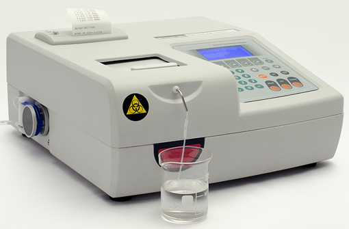

Wiener LAB Metrolab 1600 DR
Analizador semi-automatizado para química clínica

GENERALIDADES: Analizador semiautomático con lectura en celda de flujo o cubeta externa (macro/semimicro), compacto con impresora térmica integrada. Hasta 132 test programables. Software en español. Sustratos, enzimas.
Sistema de “dual” de cubeta: Microcelda de flujo metálica con ventana de cuarzo. 10 mm de paso de luz. Volumen: 18 µl.
Soporte standard de 10 mm x 10 mm para cubeta externa macro o semi-micro.
Celda de flujo termostatizada por efecto Peltier: 25ºC.
Modo de análisis: Absorbancia/concentración; punto final con/sin blanco de muestra/reactivo.
Cinéticas con/sin blanco de muestra. Cinéticas de dos puntos. Gráficos de cinética de reacción.
Lectura monocromática y bicromática.
Sistema óptico: Monocromador con filtros interferenciales. Rango de longitudes de onda: 340 a 1000 nm. Selección de longitud de onda: rueda automática de filtros con 9 posiciones.
Filtros instalados: 340, 405, 450, 505, 550, 620 y 750 nm, + 2 posiciones libres.
Ancho de banda: 10 ± 2 nm.
Rango fotométrico: -0,5 - 4,000 Abs. Precisión: +/- 0,002 Abs.
Fuente de luz: Lámpara halógena 6V - 10W. Cero automático.
Ancho: 32 cm.
Profundidad: 38 cm.
Alto: 17 cm.
Peso del equipo: 6 kg.
Incluye: Supresor de picos.
Registro: 0657E2004 SSA
DATOS COMPLEMENTARIOS: Para información adicional comunicarse a:
WIENER LAB.
REPRESENTACIONES LABIN MÉXICO, S. A. de C.V.
Teléfonos: (55) 5524-0771, 5200-2500
Lada sin costo: 01 800-581-4616
e-mail: contacto@wiener-mex.com
www.wiener-lab.com.ar